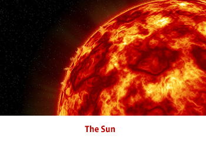

The Sun is a huge mass of hot, glowing gas. The strong gravitational pull of the Sun holds Earth and the other planets in the solar system in orbit. The Sun’s light and heat influence all of the objects in the solar system and allow life to exist on Earth.
The Sun is roughly middle aged and has not changed dramatically for over four billion years, and will remain fairly stable for more than another five billion years. However, after hydrogen fusion in its core has stopped, the Sun will undergo severe changes and become a red giant. It is calculated that the Sun will become sufficiently large to engulf the current orbits of Mercury, Venus, and possibly Earth.
The enormous effect of the Sun on Earth has been recognized since prehistoric times, and the Sun has been regarded by some cultures as a deity. Earth's movement around the Sun is the basis of the solar calendar, which is the predominant calendar in use today.
